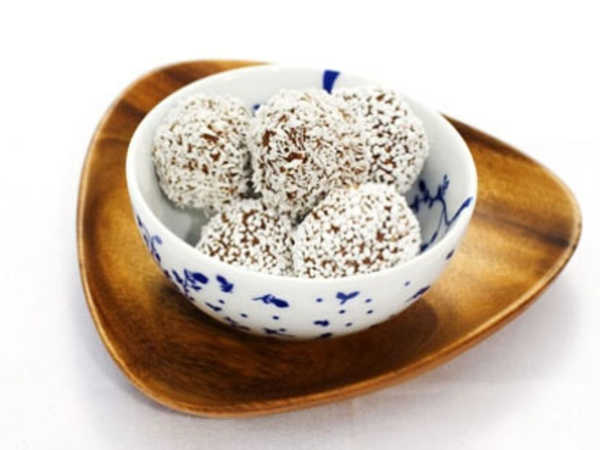

Chokladbollar
Klassiska chokladbollar är det få som kan motstå. Vill man göra dem ännu mera barnvänliga, går det
bra att utesluta kaffet.
Receptet räcker till mellan 25 och 40 st bollar, beroende på storlek.

Ingredienser
- 200 g margarin (eller smör)
- 2 dl socker
- 6 dl havregryn
- 2 tsk vaniljsocker
- 1 msk cacao
- 3 msk O'boy
- 4 msk kaffe, kallt starkt
- pärlsocker, för rullning (cocosflarn för de som inte vill ha så mycket sött i)
Gör så här
- Blanda alla ingredienserna utom kaffet och pärlsockret/kokosflarnen i en skål
- Tillsätt kaffet och blanda alltihop till en smet
- Forma smeten till bollar, cirka 3-4 centimeter i diameter och lägg dem på ett fat. Ta gärna hjälp av en
sked, så går det lite lättare att rulla
- Rulla sen bollarna i pärlsocker eller kokos och lägg dem på ett fat